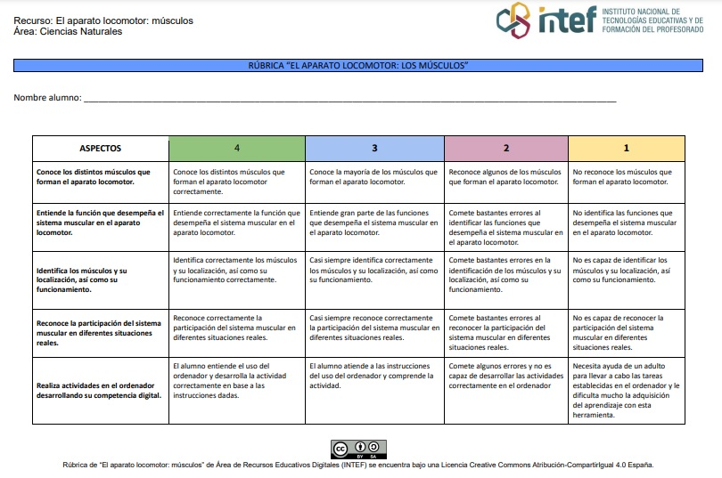

Rúbrica de evaluación
La rubrica que a continuación se muestra está desarrollada para poder evaluar el recurso "El aparato locomotor: los músculos", en base a los criterios de evaluación establecidos en los elementos curriculares de Educación Primaria.
En la primera columna podremos ver los aspectos a evaluar, para determinar si el alumno ha adquirido los conocimientos de este recurso y poder medir el grado de consecución de los criterios de evaluación.
Los grados de consecución de los mismos son: 4 (sobresaliente), 3 (notable), 2 (bien/suficiente) y 1 (insuficiente).

Aquí podrás descargar el archivo PDF y el archivo editable